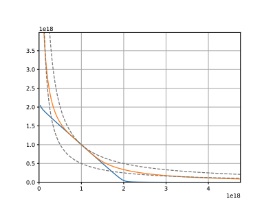

Curve 深度解析
Curve 深度解析
引言
Curve 是一种基于自动做市商（AMM）的稳定币兑换协议，最初称为 StableSwap。Curve 专注于在低滑点和低手续费的情况下，为用户提供稳定币之间的高效兑换。随着 DeFi 生态的发展，Curve 不断扩展，增加了对 ETH、BTC 以及其他替代资产的支持。本文将深入探讨 Curve 的 AMM 机制、主要业务、流动性挖矿，以及其在 DeFi 生态系统中的重要作用。
一、AMM 机制
恒定乘积与恒定总和

Curve 的核心是其独特的 AMM 机制，结合了恒定乘积和恒定总和的数学模型：
恒定乘积公式：
\[ x \times y = k_1 \]
恒定总和公式：
\[ x + y = k_2 \]
- ( x ) 和 ( y )：池中两种资产的数量。
- ( k_1 )：乘积常数。
- ( k_2 )：总和常数。
机制解释
价格均衡点附近：
- 当资产价格接近均衡点时，Curve 使用恒定总和公式。这意味着资产之间的兑换不会显著影响池中的资产比例，提供了 低滑点 和 高流动性。
偏离均衡点较多时：
- 当资产价格远离均衡点，Curve 转为使用恒定乘积公式，类似于 Uniswap 的模型。这有助于防止流动性因价格大幅波动而被耗尽。
数学模型
Curve 的定价公式综合了上述两个模型，通过参数 ( A )（放大系数）来调节，具体公式较为复杂，简化表示为：
\[ \text{Invariant} = \sum x_i + \frac{D}{A \times n^{n}} \]
- ( D )：池中资产的平衡值。
- ( n )：池中资产的数量。
- ( A )：放大系数，决定了曲线的形状。
当 ( A ) 较大时，曲线更接近平坦的恒定总和曲线；当 ( A ) 较小时，更接近恒定乘积曲线。
（图示：Curve 的曲线形状，展示不同 ( A ) 值对曲线的影响）
二、主营业务
1. 稳定币和其他资产兑换
Curve 主要提供以下类型的资产兑换：
1）稳定币兑换
- 支持资产：DAI、USDC、USDT 等超过 20 种稳定币。
- 特点：低兑换费用、低滑点、高深度，适合大额稳定币交换。
2）映射资产兑换
- 支持资产：tBTC、wBTC、renBTC、sETH 等映射资产。
- 作用：提供比特币、以太坊等主流币的 ERC-20 映射资产之间的高效兑换，保证其流动性和价格稳定。
3）票据类资产兑换
- 定义：DeFi 协议的票据型代币，代表用户在其他协议中的存款或权益。
- 示例：
- Compound 池：cDAI、cUSDC
- Yearn Finance 池：yDAI、yUSDC、yUSDT、yTUSD
- MIM 池：MIM（Magic Internet Money）
- 作用：提供这些票据类资产之间的兑换，方便用户管理和优化收益。
2. 流动性挖矿
Curve 为流动性提供者（LP）提供了挖矿激励，用户可以通过提供流动性获得多重收益。
1）操作步骤
包含绑定钱包、兑换、挖矿等详细操作步骤 https://zhuanlan.zhihu.com/p/182878770
选择流动性池：
- 在 Curve 网站的 Pools 页面，选择一个合适的流动性池（如稳定币池、BTC 池等）。
存入资产，获取 LP 代币：
- 自定义存入的资产数量，确认后将资产存入流动性池，获得对应的 LP 代币。
查看交易详情：
- 交易发出后，可以在以太坊浏览器中查看交易状态，包括授权交易和存款交易。
质押 LP 代币，获得 CRV 奖励：
- 将 LP 代币质押到 Curve DAO 中，开始获得 CRV 代币的奖励。
2）收益来源
① 平台交易手续费
- 来源：Curve 平台的交易手续费，通常为每笔交易的 0.04%。
- 分配：
- 50% 分配给流动性提供者。
- 50% 分配给 veCRV 持有者。
② LP 挖矿奖励（CRV 代币）
- CRV 代币：Curve 的治理代币，持有者可以参与协议治理和收益分配。
- 锁仓 veCRV：
- 锁仓 CRV：用户可以将 CRV 锁仓，获得 veCRV（vote-escrowed CRV）。
- 收益：
- 协议手续费分成：享受全平台交易手续费的 50% 分成。
- Boost 奖励：通过 Boost 功能，提高做市获得的 CRV 奖励，最高可提升至 2.5 倍。
- 治理权：参与协议参数调整、新池添加等治理活动。
③ 其他项目激励
- 合作项目：如 Synthetix、Ren 等项目方，会提供自家代币（如 SNX、REN）激励用户参与特定的流动性池。
3）矿池种类
① 稳定币矿池
- Base APY：来自交易手续费收益。
- Rewards APY：来自 CRV 代币的挖矿奖励。
② 第三方协议矿池
- 示例：YFI 池、Compound 池等。
- Base APY：来自交易手续费和第三方协议的存款利息（如 Yearn 的收益）。
- Rewards APY：来自 CRV 代币的挖矿奖励，以及第三方协议的代币激励。
三、页面操作流程
1. 绑定钱包
- 支持的钱包：MetaMask、Ledger、Trezor、WalletConnect 等。
- 步骤：
- 打开 Curve 网站，点击右上角的 "Connect Wallet"。
- 选择您的钱包类型，按照提示完成连接。
2. 兑换资产
- 选择交易对：在 "Exchange" 页面，选择想要兑换的资产对。
- 输入数量：输入想要兑换的资产数量，系统会自动计算可获得的目标资产数量。
- 确认交易：点击 "Swap" 按钮，确认交易详情并提交。
- 注意：首次使用某种资产时，可能需要进行授权交易。
3. 提供流动性
- 选择流动性池：在 "Pools" 页面，选择一个感兴趣的池。
- 存入资产：输入想要存入的资产数量，可以是单一资产或多种资产。
- 获得 LP 代币：存入成功后，您将获得对应的 LP 代币。
- 质押 LP 代币：前往 "Stake" 页面，将 LP 代币质押，开始获得 CRV 奖励。
4. 提取流动性
- 解除质押：在 "Stake" 页面，选择已质押的 LP 代币，进行解除质押操作。
- 赎回资产：在 "Withdraw" 页面，选择要赎回的流动性池，输入要赎回的 LP 代币数量，确认后即可取回存入的资产。
5. 锁仓 CRV 获取 veCRV
- 前往治理页面：在 "DAO" 或 "Vote" 页面。
- 锁定 CRV：选择锁定的 CRV 数量和期限（最长可达 4 年）。
- 获得 veCRV：锁仓后，您将获得 veCRV，用于提升奖励和参与治理。
（提示：实际操作中，请务必核对交易详情，注意 GAS 费用，确保钱包安全）
四、CRV 代币与治理
CRV 代币基本信息
- 代币名称：Curve DAO Token
- 代币符号：CRV
- 总供应量：3,303,030,299 枚
分配情况
- 流动性提供者：62%
- 团队和投资者：30%
- 社区储备：5%
- 员工激励：3%
veCRV 与治理
- veCRV：通过锁定 CRV 获得，用于参与协议治理和提升奖励。
- 治理权重：锁定时间越长，获得的 veCRV 越多，治理权重越大。
- 投票事项：包括添加新池、调整参数、分配奖励等。
五、Curve 的优势与特点
- 低滑点：针对稳定币和映射资产的兑换，滑点极低，适合大额交易。
- 高效率：独特的 AMM 机制，提供了更好的价格和深度。
- 多重收益：流动性提供者可以获得交易手续费、CRV 挖矿奖励，以及其他项目的代币激励。
- 广泛集成：Curve 已被众多 DeFi 协议集成，如 Yearn、Convex、StakeDAO 等，扩大了其生态影响力。
六、风险与注意事项
- 智能合约风险：尽管 Curve 合约经过审计，但仍存在潜在的漏洞风险。
- 流动性风险：在极端市场情况下，资产价格可能出现剧烈波动，导致损失。
- 无常损失：对于非稳定币池，提供流动性可能面临无常损失。
- 治理风险：参与治理需要理解提案内容，谨慎投票。
七、结论
Curve 作为 DeFi 领域的重要稳定币兑换协议，凭借其创新的 AMM 机制和多样化的业务模式，成为了稳定币和映射资产交易的首选平台。对于投资者和流动性提供者而言，理解 Curve 的工作原理和操作流程，有助于更好地参与其中，获取收益。然而，参与 DeFi 项目始终伴随着风险，建议用户在充分了解相关信息后，谨慎决策。